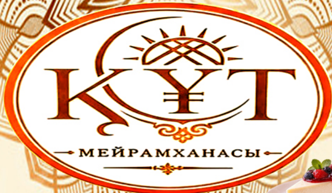

М Е Й Р А М Х А Н А С Ы
✓ Халал мейрамхана
Дастарқанымызға қош келдіңіз!

ҚҰТТЫҢ ДАСТАРҚАНЫ
Бұл атаумен тағам табылмады. Басқа сөзбен іздеп көріңіз.
Барлық баға теңгемен көрсетілген. Қызмет көрсету ақысы — 10%.
ҚОНАҚҚА КЕЛІҢІЗ
Алматы, Тұрғыт Озал 1784-қабат
Жұмыс уақыты: 11:00–02:00